Conoce un poco sobre mi vida
Mi nombre es Albert Moises Valerio Peña. Esta página fue creada con el proposito presentarme a mi mismo de una manera diferente pero con una idea sacada de la biografia de Albert Einsthein, ya que el es muy conocido por sus aportes y tiene varias paginas web sobre el. Aca veran las cosas publicas sobre mi historia.
Aquí podrás conocer mis gustos, mis recuerdos y mis sueños.
Nací el 04 de moviembre del año 2007 en la maternidad de los minas Santo Domingo. Soy una persona a la que siempre le ha gustado aprender, crear y buscar nuevas oportunidades. Desde pequeño he tenido el interes por el dibujo, una de mis grandes pasiones, y con el tiempo tambien descubri que me gusta mucho emprender y buscar maneras de salir adelante por mis propios medios. He tenido la oportunidad de intentar diferentes emperendimientos. Estuve invocrado en dos pequeños negocios, uno de car wash y el otro dedicado a la venta de helados. Aunque lo deje no fue porque fracaso si no que soy una perona de ver resultados rapidos pero si lo estuve, en la de helados y car wash pero no tuve la disciplina de seguir. Tambien fui Boxeaor. El boxeo me enseño esa disciplina, constancia y a mantenerme firme incluso en los momentos dificles. para mi no era solo un deporte, simo una forma de ser un campeon y representar mi pais en las categoria peso pluma. Sin embargo hubo un momento en mi vida doonde todo cambio. Mi salud se complico durante un entrenamiento y tuve que ser llevado a intensivo debido a un derrame pleural. Fue una experiencia dificil quye me hizo ver la vida de una manera diferente, yavalor valorar mucho mas mi salud. Gracias a Dios y a mi familia hoy sigo firme. Hoy en dia tengo varios proyectos e emperendimientos a futuros. .
Mi videojuego favorito es Good of war
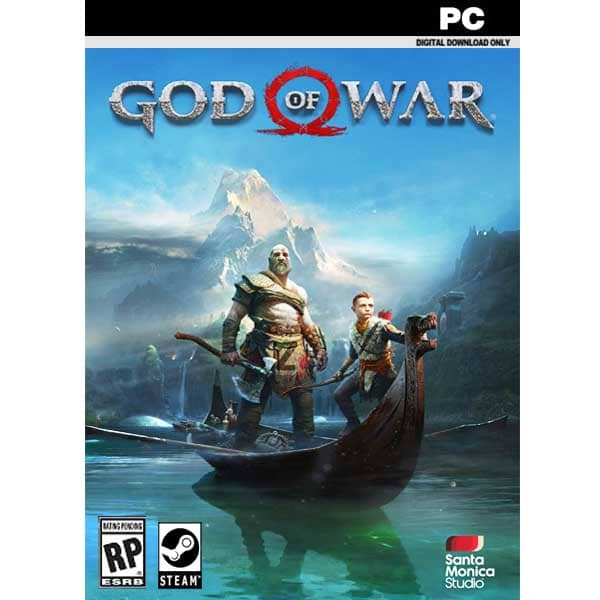
>Me gusta escuchar creere .
Mi comida favorita es Arroz y habichuela jajaj
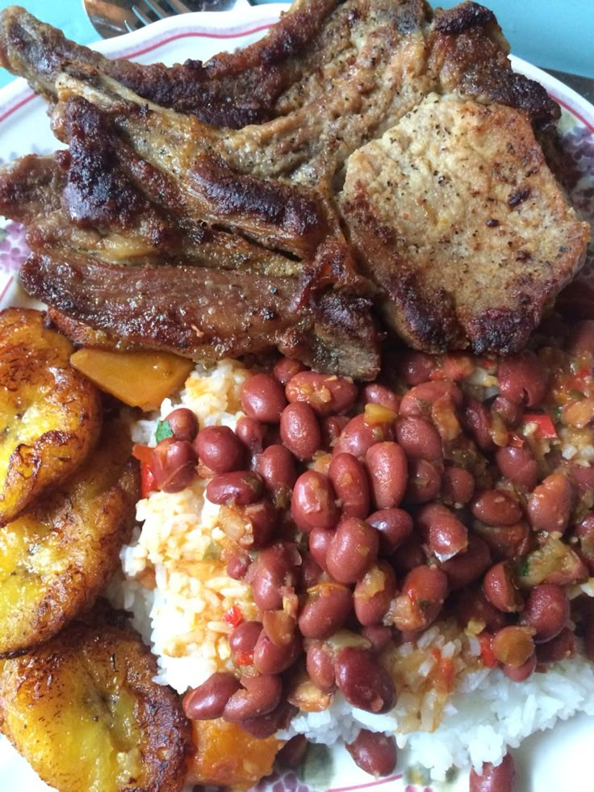
Mi deporte favorito es Boxeo
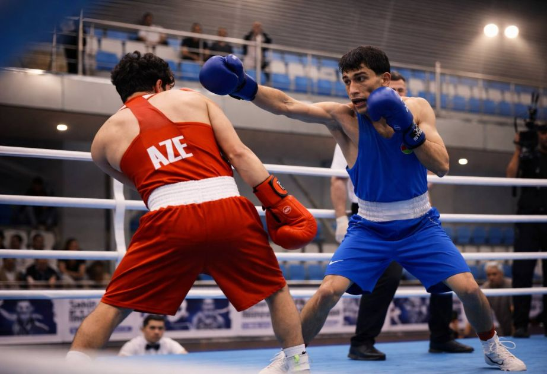
.gervanta davis
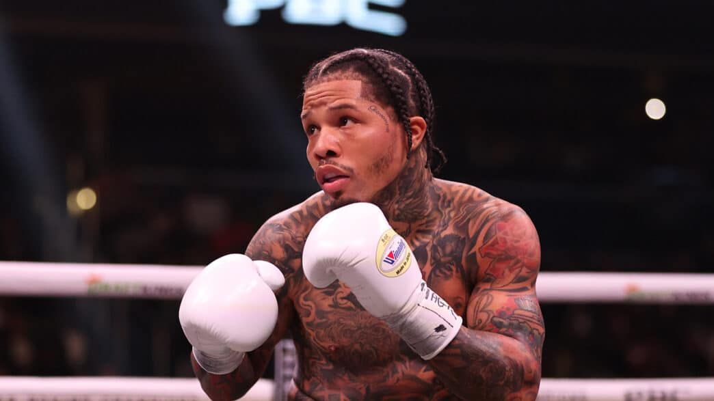
recuerdos
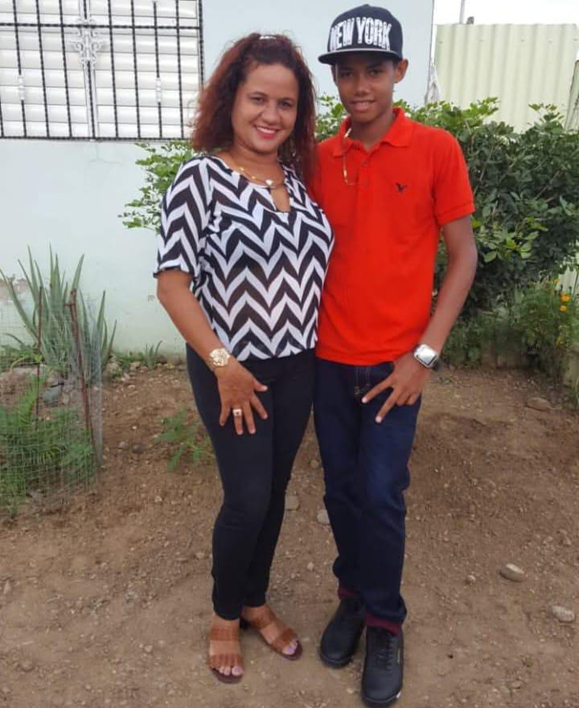
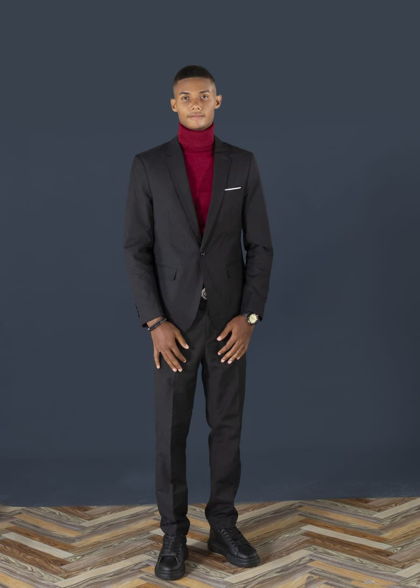
Este es el:
Uno de mis logros más importantes fue
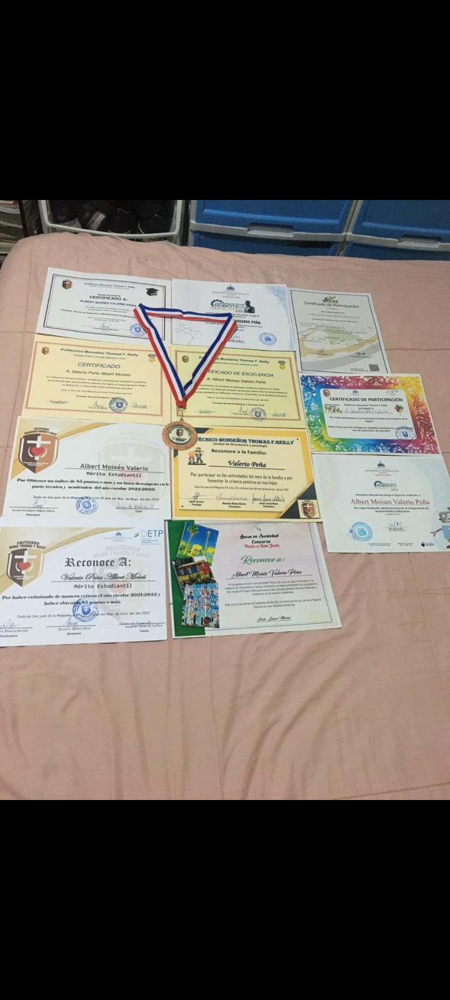 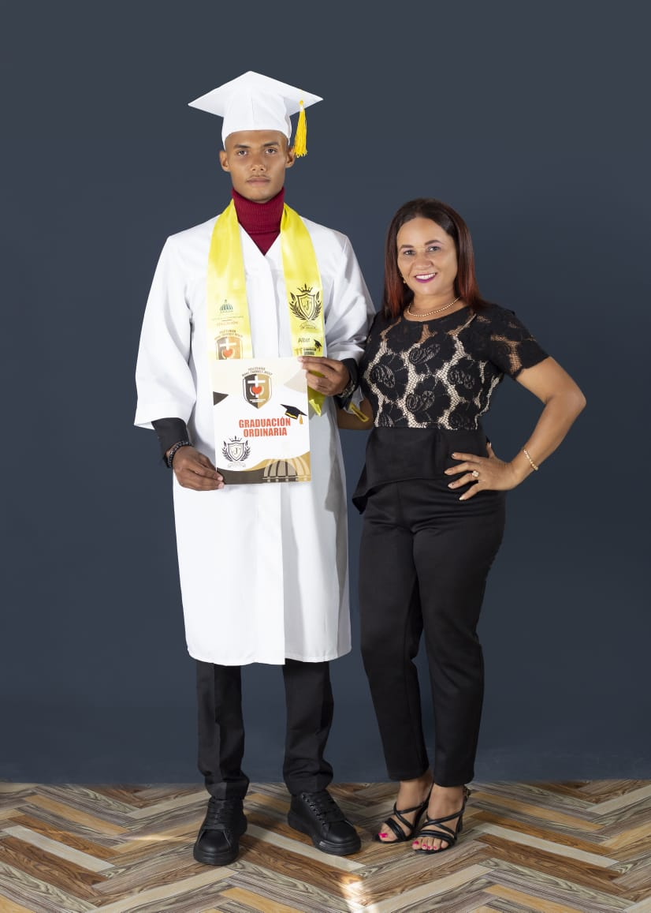 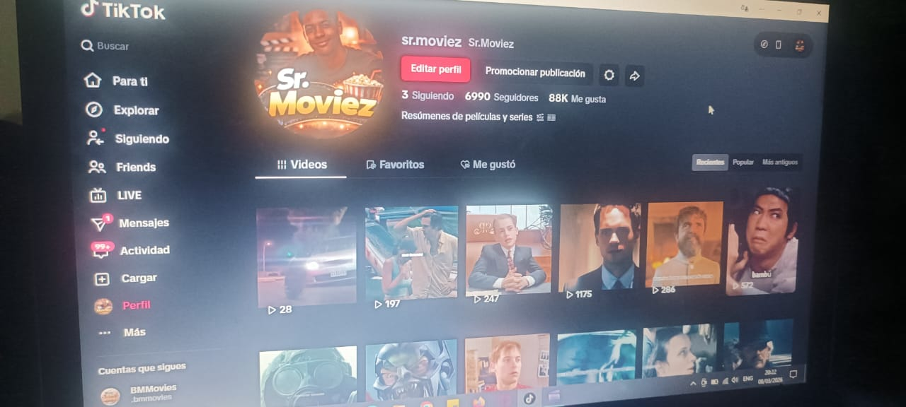 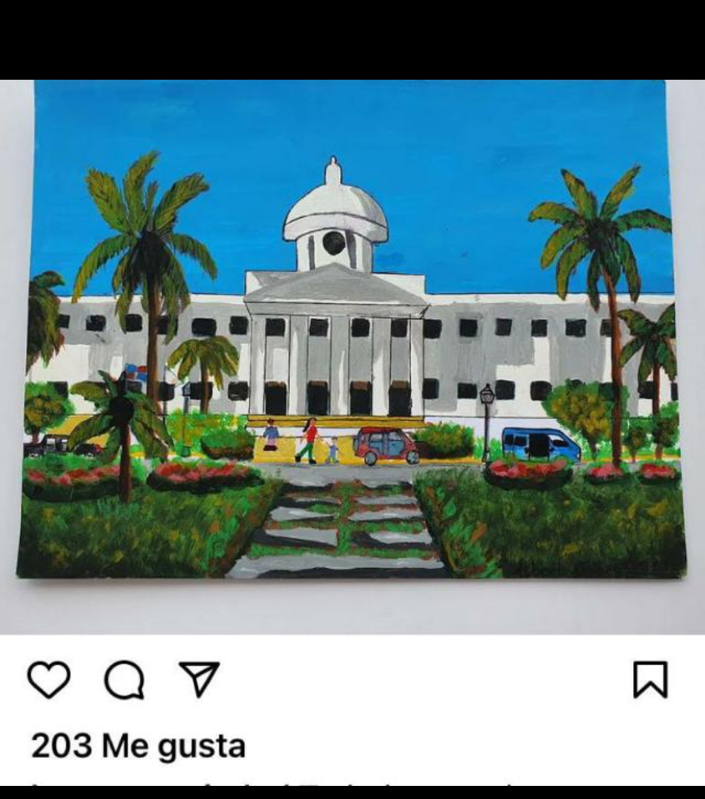 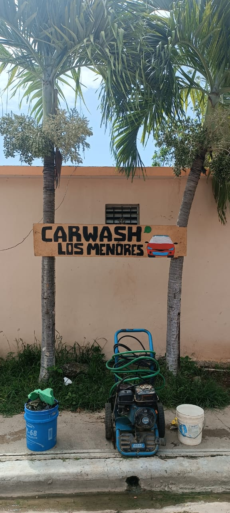
No me gusta decirlo pero este fue uno de ellos pero no puedo cumplirlo
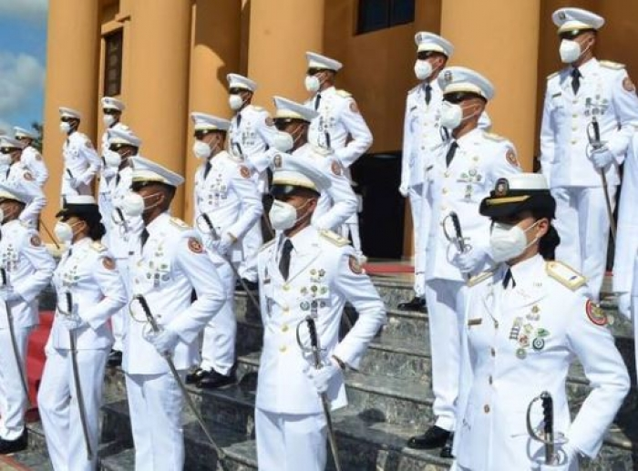
Cuando crees que has terminado, solo has alcanzado el 40 por ciento de lo que tu cuerpo es capaz de hacer
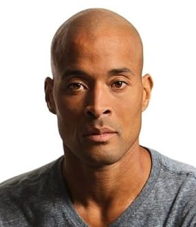Mi sueño 🚀
Una frase que nunca olvido ⭐